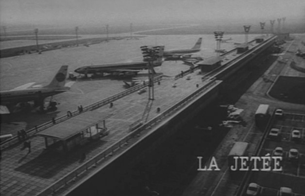

Movie review by : SFAM
Year : 1962
Directed by : Chris Marker
Written by : Chris Marker
Degree of Cyberpunk visuals : High
Correlation to Cyberpunk themes : Very High
Rating : 10/10
Key cast members :
Overview: Terry Gilliam, in his commentary on La Jetée rightly said that these two movies fit perfectly together; that La Jetée was like the an acorn - small, compact... perfect. And Twelve Monkeys is the oak tree that the acorn becomes, with branches going all directions. A much more complex, grand, dizzy state. But at the heart, they are the same thing.

In watching them together, it's impossible to disagree. La Jetée and Twelve Monkeys simply fit as a wonderfully nuanced cyberpunk experience. While some of the details are different (nuclear holocaust versus a manufactured virus), the essential story is the same. Both involve extreme dystopian futures, where, upon the development of time travel, the powers that be send unwilling test subjects back in time (and to the future in La Jetée's case) in order to find key supplies and information that will save them in their present situation. While on their journey, these test subjects develop deep soul-mate style relationships with a person from the past. Also, both share the same fantastical life ending experience.
Both films also deal with the issue of memory, and how a single past experience became so powerful as to almost structure their reality. More interesting, the question of how time travel affects one's understanding of reality in general. Would you really be able to distinguish reality after such massive time shifts, or would you drift into a dream state - never really sure whether what you were looking at was real or not, was the present or not.
In both movies, the test subjects are prisoners, with no control over their own fate. The test subjects are both unique in that many others could not survive the experience. In both movies, the masters are the scientists and technologists - it is they who control the fate of the human race in this dystopic future. Normal traits we think of as humanity are abolished. In Twelve Monkeys, for instance, the test subjects live in chicken wire-style cages. In both cases, it is assumed by the scientists that the test subjects will use the opportunity to engage in self-fulfillment versus larger humanity concerns. The overall mood of imprisonment and inescapable fate permeate both movies.
La Jetée as a movie is one of the most interesting I've encountered. Virtually the whole movie involves narrating still shots. While this sounds like a glorified slideshow, it's anything but. The pacing is magnificent. The mood created is truly immersive. In a truly astounding feat, Marker traps the viewer in this "slide show" mentality, and then, as the movie is discussing whether the character can decipher what's real or not, he pulls the run out from under us. The stills show a sequence of the woman (Hélène Chatelain) lying in on the bed - as the reality discussion ensures, just for a split second, you see the woman's eye's blink and her hand move ever so slightly. It's such a subtle use of movement that you never are sure if you saw it or not. In other words, Marker has magnificently turned the idea of a moving picture into an effect as powerful as anything a CG factory could produce - it totally emphasizes the questioning of reality, as you, the viewer aren't even sure what you're watching anymore!
Twelve Monkeys has three magnificent performances turned in by Bruce Willis, Madeleine Stowe and Brad Pitt. Truly, I've not seen Willis or Pitt anywhere near as good as they are in this flick. While the movie isn't as innovative as La Jetée, Gilliam's incredible sense of cinematography and scene diversity is on full display here. The underground base in the dystopic future looks as grim as possible - truly this is an inhuman monstrosity. Make no mistake, Twelve Monkeys is terrific cinema.
Degree of Cyberpunkness: Now, are they cyberpunk? To me, the answer an overwhelming yes!! (well, La Jetée is pre-cyberpunk). We have massively dystopic futures, controlled by scientists and technologists. Truly, humanity becomes a fleeting thing. Information plays a crucial role, as does technology. In Twelve Monkeys they have developed ways of communicating through a voice machine, and tracking them via a tooth implant. The underground is alive and present, especially in Twelve Monkeys. And we have a Japanese cyberpunk-style invasion of the body while forcing people into time travel. In La Jetée, the test subject (Jean Négroni) has wires attached to his eyes and other places, whereas Twelve Monkeys has a more effects-laden invasive proceedures.
The Bottom Line: If possible watch these movies as a pair. If, like me, you'd only seen Twelve Monkeys, your in for a treat when you finally get your hands on La Jetée, your in for an experience! If you haven't seen either, Twelve Monkeys is coming out with a Special Edition next month - I'm guessing there will be some nice linkages there on the extras.